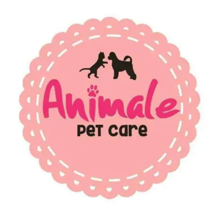
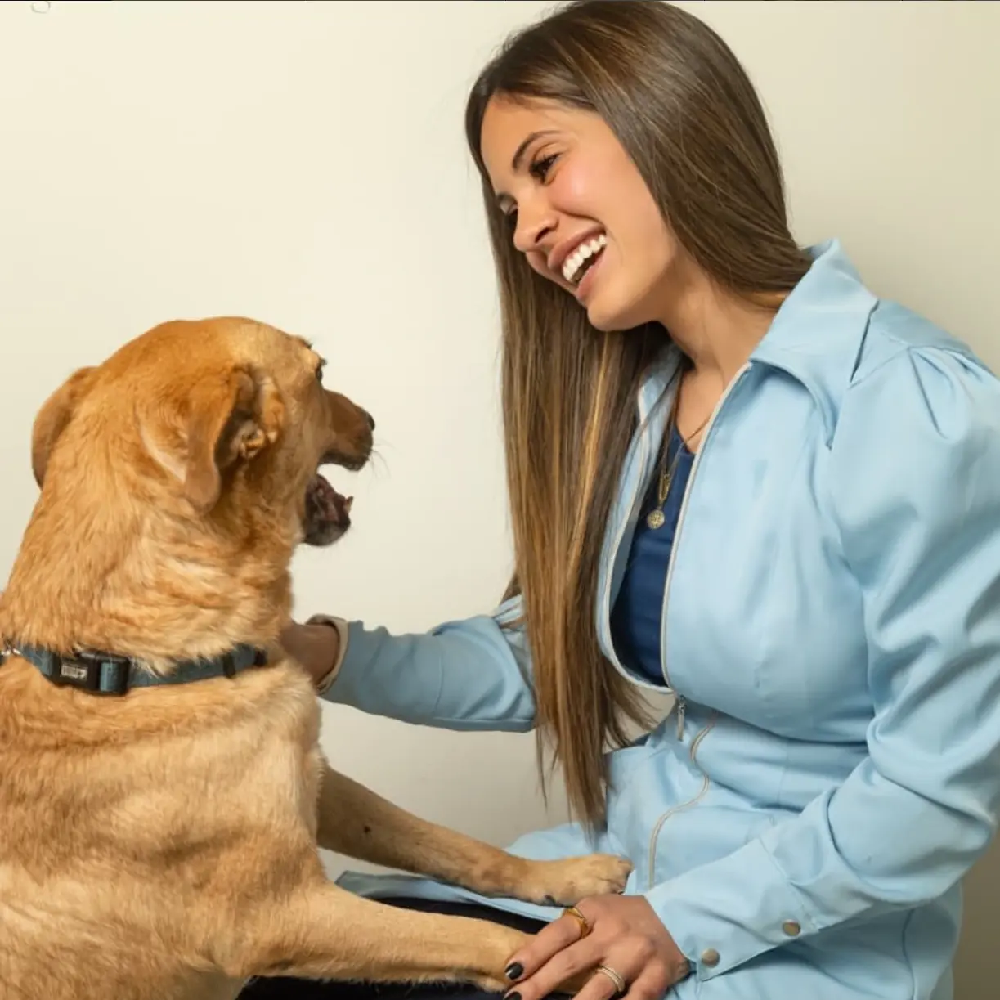
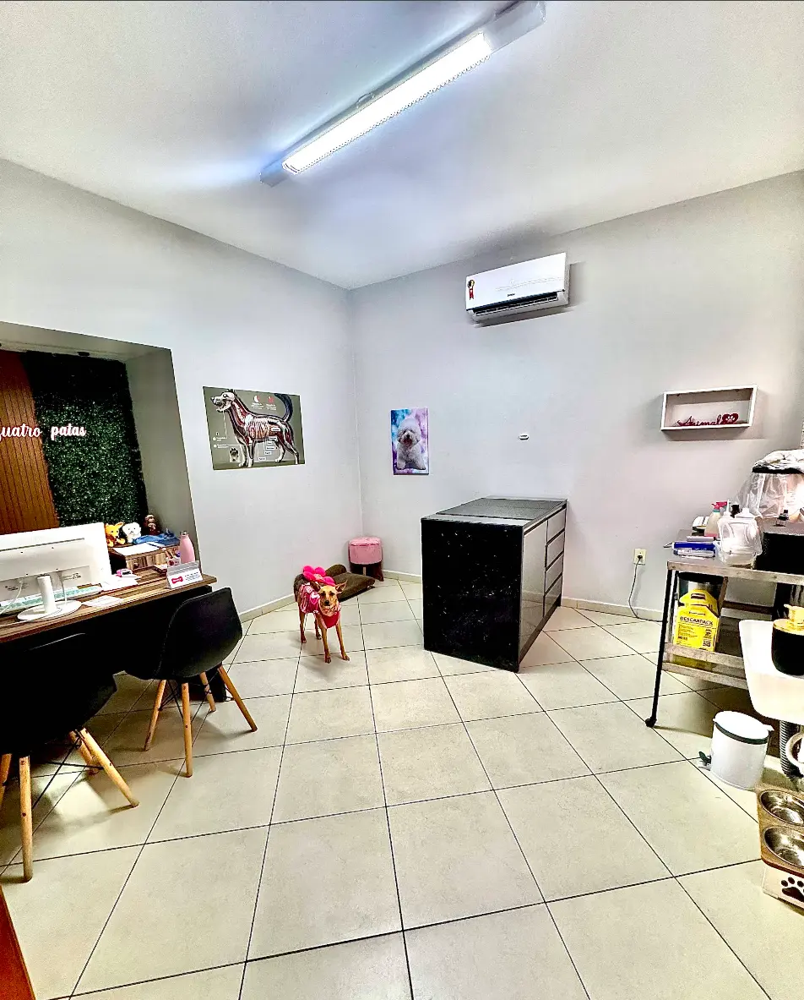

Clínica Veterinária
Atendimento próximo e cuidadoso para acompanhar a saúde do seu pet.

Clínica Veterinária & Banho e Tosa
Há mais de 8 anos cuidando com atenção, carinho e respeito de quem faz parte da sua família.
Jardim Chapadão
R. Cônego Manoel Garcia, 167 · Campinas

8+anos cuidando
com muito amor
2frentes de cuidado
em um só lugar
1contato direto
pelo WhatsApp
Na Animale Pet Care, cada atendimento começa com atenção. Porque cada pet tem seu jeito, sua rotina e uma história única ao lado da família.
Da saúde ao bem-estar, o cuidado acontece com carinho em cada detalhe.
Acompanhar no Instagram ↗Atendimento próximoCuidado atento em cada detalhe.
Nossos serviços
Do acompanhamento veterinário aos momentos de higiene e beleza.
Nosso compromisso
Mais de oito anos construindo relações de confiança com tutores de Campinas e cuidando de cada pet como ele merece.
Atendimento simples
Fale com a equipe pelo WhatsApp e explique como podemos ajudar.
Consulte a disponibilidade e escolha o melhor momento para o seu pet.
Estamos no Jardim Chapadão, em Campinas, prontos para receber vocês.
Onde nos encontrar

Conheça nosso espaçoanimale.
Vamos cuidar juntos?